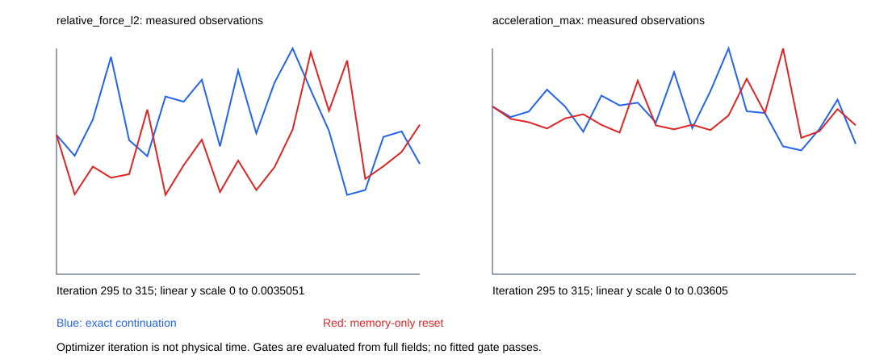

Optimizer iterations are not physical time. Q21 changes conjugacy memory only between paired arms. Historical Q22 is evaluated without normalization, relaxation or resampling. Existing positive static findings remain recorded within their original scope.
Prior diagnosis assessment · Full measured results · Historical field inventory and deferral

{
"reason": "diagnostic_attempt_budget",
"attempts_charged": 20,
"accepted_steps": 20,
"final_gates": {
"representation": true,
"strict_stationary": false,
"boundary_admitted": false,
"all_readiness_gates": false
},
"fits": {
"relative_force_l2": {
"status": "descriptive_fit_complete",
"x_origin_iteration": 295,
"models": [
{
"model": "linear",
"coefficients_highest_power_first": [
-2.315642385522171e-05,
0.0025952674659948894
],
"holdout_relative_rmse": 0.1650604941207582,
"holdout_points": 3
},
{
"model": "quadratic",
"coefficients_highest_power_first": [
-8.485810675270375e-06,
0.0001465597896501858,
0.0020578327898944323
],
"holdout_relative_rmse": 0.4757705619994436,
"holdout_points": 3
},
{
"model": "exponential",
"coefficients_highest_power_first": [
-0.012188044240744933,
-5.962309066314919
],
"holdout_relative_rmse": 0.10659103957442884,
"holdout_points": 3
}
],
"admission_inferred": false,
"budget_extension": false
},
"acceleration_max": {
"status": "descriptive_fit_complete",
"x_origin_iteration": 295,
"models": [
{
"model": "linear",
"coefficients_highest_power_first": [
-0.00016646494339524898,
0.02778704620340239
],
"holdout_relative_rmse": 0.13277203806777826,
"holdout_points": 3
},
{
"model": "quadratic",
"coefficients_highest_power_first": [
-3.931047128193735e-05,
0.0006197444822434995,
0.025297383022213023
],
"holdout_relative_rmse": 0.20710551397641544,
"holdout_points": 3
},
{
"model": "exponential",
"coefficients_highest_power_first": [
-0.007400606713943296,
-3.581321614995991
],
"holdout_relative_rmse": 0.12400828570301266,
"holdout_points": 3
}
],
"admission_inferred": false,
"budget_extension": false
}
}
}{
"reason": "diagnostic_attempt_budget",
"attempts_charged": 20,
"accepted_steps": 20,
"final_gates": {
"representation": true,
"strict_stationary": false,
"boundary_admitted": false,
"all_readiness_gates": false
},
"fits": {
"relative_force_l2": {
"status": "descriptive_fit_complete",
"x_origin_iteration": 295,
"models": [
{
"model": "linear",
"coefficients_highest_power_first": [
3.5858356962630375e-05,
0.0015757801629446883
],
"holdout_relative_rmse": 0.29115975748107825,
"holdout_points": 3
},
{
"model": "quadratic",
"coefficients_highest_power_first": [
1.7128567529711507e-07,
3.243264345668808e-05,
0.0015866282557135054
],
"holdout_relative_rmse": 0.5407502432749156,
"holdout_points": 3
},
{
"model": "exponential",
"coefficients_highest_power_first": [
0.017568219409297495,
-6.468737981389404
],
"holdout_relative_rmse": 0.2283222305575859,
"holdout_points": 3
}
],
"admission_inferred": false,
"budget_extension": false
},
"acceleration_max": {
"status": "descriptive_fit_complete",
"x_origin_iteration": 295,
"models": [
{
"model": "linear",
"coefficients_highest_power_first": [
6.740887706561034e-05,
0.02474337471770479
],
"holdout_relative_rmse": 0.14233245724187646,
"holdout_points": 3
},
{
"model": "quadratic",
"coefficients_highest_power_first": [
-4.41510467145889e-06,
0.00015571097049478952,
0.02446375142184573
],
"holdout_relative_rmse": 0.24228557608241402,
"holdout_points": 3
},
{
"model": "exponential",
"coefficients_highest_power_first": [
0.0019472156662286393,
-3.6994158523355174
],
"holdout_relative_rmse": 0.12206179830103914,
"holdout_points": 3
}
],
"admission_inferred": false,
"budget_extension": false
}
}
}"complete_pending_review"
{
"recorded_at": {
"utc": "2026-11-20T11:47:49.250631+00:00",
"melbourne": "2026-11-20T22:47:49.250631+11:00"
},
"metrics": {
"energy": 1.99948549715528,
"relative_force_l2": 1.1542460483787707e-05,
"acceleration_max": 6.636497024101145e-05,
"acceleration_rms": 8.366182125980412e-07,
"minimum_corner_cone": 0.9338021913610102,
"hopf_integral": -1.9961557335587894,
"unit_error": 2.220446049250313e-16,
"max_neighbour_angle": 0.3972169307717207,
"mean_topological_b": [
-1.1953179288986849e-18,
2.0126580464510174e-17,
-6.18706716583301e-06
],
"scope": "finite-grid Coulomb-gauge integral, not an exact integer certificate",
"tail_fraction": 0.0003015441669190186,
"guard_fraction": 0.0006463789224437667
},
"gates": {
"representation": true,
"strict_stationary": true,
"boundary_admitted": true,
"all_readiness_gates": true
},
"source_sha256": "8772bde16a7301ac9d77ff04b8089da0324916a4795c2f99e797c96f24f9b930"
}{
"recorded_at": {
"utc": "2026-11-20T11:48:24.930479+00:00",
"melbourne": "2026-11-20T22:48:24.930479+11:00"
},
"passed": true,
"energy": 12.347072371150139,
"rows": [
{
"direction": "negative_projected_gradient",
"differences": [
{
"epsilon": 0.001,
"predicted": -0.0037760999491558518,
"centered_difference": -0.003776042869496621,
"absolute_error": 5.707965923095609e-08,
"tolerance": 7.652199898311703e-06,
"passed": true
},
{
"epsilon": 0.0003,
"predicted": -0.0037760999491558518,
"centered_difference": -0.0037760948146114974,
"absolute_error": 5.134544354360587e-09,
"tolerance": 7.652199898311703e-06,
"passed": true
},
{
"epsilon": 0.0001,
"predicted": -0.0037760999491558518,
"centered_difference": -0.0037760993798485742,
"absolute_error": 5.693072775356245e-10,
"tolerance": 7.652199898311703e-06,
"passed": true
}
],
"passed": true
},
{
"direction": "deterministic_smooth_tangent",
"differences": [
{
"epsilon": 0.001,
"predicted": 0.0011979071156804446,
"centered_difference": 0.0011979035079434652,
"absolute_error": 3.607736979386461e-09,
"tolerance": 2.4958142313608893e-06,
"passed": true
},
{
"epsilon": 0.0003,
"predicted": 0.0011979071156804446,
"centered_difference": 0.0011979067930193803,
"absolute_error": 3.226610643166511e-10,
"tolerance": 2.4958142313608893e-06,
"passed": true
},
{
"epsilon": 0.0001,
"predicted": 0.0011979071156804446,
"centered_difference": 0.001197907071315285,
"absolute_error": 4.4365159549558664e-11,
"tolerance": 2.4958142313608893e-06,
"passed": true
}
],
"passed": true
}
],
"energy_gradient_calls": 13,
"optimizer_attempts": 0,
"physical_time_steps": 0,
"scope": "Centered constrained retractions on the exact Q21 endpoint; no accepted optimization updates"
}{
"recorded_at": {
"utc": "2026-11-20T11:59:16.366451+00:00",
"melbourne": "2026-11-20T22:59:16.366451+11:00"
},
"matched_iterations": [
295,
296,
297,
298,
299,
300,
301,
302,
303,
304,
305,
306,
307,
308,
309,
310,
311,
312,
313,
314,
315
],
"paired": [
{
"iteration": 295,
"exact": {
"energy": 12.347072371150139,
"relative_force_l2": 0.0021617808369545394,
"acceleration_max": 0.026782056536655736,
"acceleration_rms": 0.00037435184192114124,
"minimum_corner_cone": 0.7967911085886914,
"hopf_integral": -20.718051592877597,
"unit_error": 3.3306690738754696e-16,
"max_neighbour_angle": 0.7357409276400833,
"mean_topological_b": [
2.433152936227647e-07,
8.884995154809963e-07,
-0.00014841198598617133
],
"scope": "finite-grid Coulomb-gauge integral, not an exact integer certificate",
"tail_fraction": 0.001569382023907253,
"guard_fraction": 0.003150297578275691
},
"memory_reset": {
"energy": 12.347072371150139,
"relative_force_l2": 0.0021617808369545394,
"acceleration_max": 0.026782056536655736,
"acceleration_rms": 0.00037435184192114124,
"minimum_corner_cone": 0.7967911085886914,
"hopf_integral": -20.718051592877597,
"unit_error": 3.3306690738754696e-16,
"max_neighbour_angle": 0.7357409276400833,
"mean_topological_b": [
2.433152936227647e-07,
8.884995154809963e-07,
-0.00014841198598617133
],
"scope": "finite-grid Coulomb-gauge integral, not an exact integer certificate",
"tail_fraction": 0.001569382023907253,
"guard_fraction": 0.003150297578275691
},
"joint_reset_better": false
},
{
"iteration": 296,
"exact": {
"energy": 12.347068219917059,
"relative_force_l2": 0.0018382610316706946,
"acceleration_max": 0.025092473786677796,
"acceleration_rms": 0.0003494951920610966,
"minimum_corner_cone": 0.797346875052945,
"hopf_integral": -20.71805103919463,
"unit_error": 3.3306690738754696e-16,
"max_neighbour_angle": 0.7348936825147787,
"mean_topological_b": [
2.611423841312846e-07,
8.180879182363437e-07,
-0.00014840672127821268
],
"scope": "finite-grid Coulomb-gauge integral, not an exact integer certificate",
"tail_fraction": 0.0015692774942003603,
"guard_fraction": 0.00315010391081412
},
"memory_reset": {
"energy": 12.347069585018668,
"relative_force_l2": 0.001240945458002965,
"acceleration_max": 0.02480978973634988,
"acceleration_rms": 0.00026625957629155134,
"minimum_corner_cone": 0.7973203047559703,
"hopf_integral": -20.71808845673824,
"unit_error": 3.3306690738754696e-16,
"max_neighbour_angle": 0.7351507557707138,
"mean_topological_b": [
2.533617874954087e-07,
8.499027720931382e-07,
-0.0001483848901574027
],
"scope": "finite-grid Coulomb-gauge integral, not an exact integer certificate",
"tail_fraction": 0.001569374230042711,
"guard_fraction": 0.0031502916022841006
},
"joint_reset_better": true
},
{
"iteration": 297,
"exact": {
"energy": 12.347063003774373,
"relative_force_l2": 0.002400781785451088,
"acceleration_max": 0.025972106819015385,
"acceleration_rms": 0.00039599630597837775,
"minimum_corner_cone": 0.7972894050569536,
"hopf_integral": -20.718073909699523,
"unit_error": 3.3306690738754696e-16,
"max_neighbour_angle": 0.7347715725968451,
"mean_topological_b": [
2.4890063593912987e-07,
8.384176468093591e-07,
-0.00014838956014902793
],
"scope": "finite-grid Coulomb-gauge integral, not an exact integer certificate",
"tail_fraction": 0.0015690851045274774,
"guard_fraction": 0.0031497749070027083
},
"memory_reset": {
"energy": 12.347069542502668,
"relative_force_l2": 0.0016704797078493177,
"acceleration_max": 0.02426854034145151,
"acceleration_rms": 0.00031773489577547893,
"minimum_corner_cone": 0.797409789394923,
"hopf_integral": -20.71812589108881,
"unit_error": 3.3306690738754696e-16,
"max_neighbour_angle": 0.7346983330099607,
"mean_topological_b": [
2.6015223991389877e-07,
8.393181709386322e-07,
-0.0001483599606907309
],
"scope": "finite-grid Coulomb-gauge integral, not an exact integer certificate",
"tail_fraction": 0.001569352172611322,
"guard_fraction": 0.0031502646865193933
},
"joint_reset_better": true
},
{
"iteration": 298,
"exact": {
"energy": 12.347056317692353,
"relative_force_l2": 0.0033733039817346305,
"acceleration_max": 0.029467838216259944,
"acceleration_rms": 0.0005439986582336359,
"minimum_corner_cone": 0.7967411439748551,
"hopf_integral": -20.717747605152223,
"unit_error": 3.3306690738754696e-16,
"max_neighbour_angle": 0.7363043680404108,
"mean_topological_b": [
2.4741855291139455e-07,
7.896169250000743e-07,
-0.00014856054693602658
],
"scope": "finite-grid Coulomb-gauge integral, not an exact integer certificate",
"tail_fraction": 0.0015686718790940777,
"guard_fraction": 0.003148902045351422
},
"memory_reset": {
"energy": 12.347068047591206,
"relative_force_l2": 0.0014975677148965129,
"acceleration_max": 0.02326611158727628,
"acceleration_rms": 0.0002867958609420354,
"minimum_corner_cone": 0.797161420133315,
"hopf_integral": -20.718112293189158,
"unit_error": 3.3306690738754696e-16,
"max_neighbour_angle": 0.7349578353726901,
"mean_topological_b": [
2.5368454440272573e-07,
8.600769724291693e-07,
-0.00014836793471758973
],
"scope": "finite-grid Coulomb-gauge integral, not an exact integer certificate",
"tail_fraction": 0.001569316994119739,
"guard_fraction": 0.0031501992254294986
},
"joint_reset_better": true
},
{
"iteration": 299,
"exact": {
"energy": 12.347047857117923,
"relative_force_l2": 0.0020800196633554307,
"acceleration_max": 0.026776423480280063,
"acceleration_rms": 0.0003674048079638384,
"minimum_corner_cone": 0.7967972523759146,
"hopf_integral": -20.7177806673811,
"unit_error": 3.3306690738754696e-16,
"max_neighbour_angle": 0.7354634855995579,
"mean_topological_b": [
2.4097818114012656e-07,
7.737196094624136e-07,
-0.00014859035697525788
],
"scope": "finite-grid Coulomb-gauge integral, not an exact integer certificate",
"tail_fraction": 0.0015686075721025718,
"guard_fraction": 0.0031488351748993164
},
"memory_reset": {
"energy": 12.347066555346029,
"relative_force_l2": 0.00155416065861299,
"acceleration_max": 0.02487662636104292,
"acceleration_rms": 0.0002966934396287082,
"minimum_corner_cone": 0.7971831304766606,
"hopf_integral": -20.71803137400777,
"unit_error": 3.3306690738754696e-16,
"max_neighbour_angle": 0.735552362338084,
"mean_topological_b": [
2.4377613556716944e-07,
8.568077013979706e-07,
-0.00014841807088679902
],
"scope": "finite-grid Coulomb-gauge integral, not an exact integer certificate",
"tail_fraction": 0.0015692534517908717,
"guard_fraction": 0.0031500575382100273
},
"joint_reset_better": true
},
{
"iteration": 300,
"exact": {
"energy": 12.34704443504807,
"relative_force_l2": 0.0018326590742270806,
"acceleration_max": 0.022759583856759767,
"acceleration_rms": 0.0003214747785757287,
"minimum_corner_cone": 0.7971192682035332,
"hopf_integral": -20.717856768023704,
"unit_error": 3.3306690738754696e-16,
"max_neighbour_angle": 0.7348922665025477,
"mean_topological_b": [
2.4865358330242085e-07,
7.642118562786397e-07,
-0.00014850875682804595
],
"scope": "finite-grid Coulomb-gauge integral, not an exact integer certificate",
"tail_fraction": 0.0015685300530073627,
"guard_fraction": 0.003148701570643681
},
"memory_reset": {
"energy": 12.347065895996396,
"relative_force_l2": 0.002555889221769506,
"acceleration_max": 0.025543005815794637,
"acceleration_rms": 0.0004371896642292477,
"minimum_corner_cone": 0.7968066225248092,
"hopf_integral": -20.717956161932953,
"unit_error": 3.3306690738754696e-16,
"max_neighbour_angle": 0.7351788639331917,
"mean_topological_b": [
2.6067189945839154e-07,
8.13245075788384e-07,
-0.00014847266011003835
],
"scope": "finite-grid Coulomb-gauge integral, not an exact integer certificate",
"tail_fraction": 0.0015691251975421994,
"guard_fraction": 0.0031498054309504102
},
"joint_reset_better": false
},
{
"iteration": 301,
"exact": {
"energy": 12.347043520999367,
"relative_force_l2": 0.00275849078370653,
"acceleration_max": 0.028519833026043453,
"acceleration_rms": 0.00043918401499846077,
"minimum_corner_cone": 0.7973006602541449,
"hopf_integral": -20.71783866351916,
"unit_error": 3.3306690738754696e-16,
"max_neighbour_angle": 0.7348614127144867,
"mean_topological_b": [
2.507822362025016e-07,
7.540271552836289e-07,
-0.00014850366503449503
],
"scope": "finite-grid Coulomb-gauge integral, not an exact integer certificate",
"tail_fraction": 0.001568395179309151,
"guard_fraction": 0.0031484466994260545
},
"memory_reset": {
"energy": 12.347059849224488,
"relative_force_l2": 0.0012321826246277944,
"acceleration_max": 0.02384316311468395,
"acceleration_rms": 0.00025904631182759334,
"minimum_corner_cone": 0.7972234484627867,
"hopf_integral": -20.71798199140241,
"unit_error": 3.3306690738754696e-16,
"max_neighbour_angle": 0.7353077652814833,
"mean_topological_b": [
2.480383841564497e-07,
8.23442447242763e-07,
-0.0001484432828236009
],
"scope": "finite-grid Coulomb-gauge integral, not an exact integer certificate",
"tail_fraction": 0.0015690641181127117,
"guard_fraction": 0.0031496999733089913
},
"joint_reset_better": true
},
{
"iteration": 302,
"exact": {
"energy": 12.347040799386654,
"relative_force_l2": 0.0026779152894507055,
"acceleration_max": 0.02694892906736943,
"acceleration_rms": 0.00045560261831384684,
"minimum_corner_cone": 0.796617676759766,
"hopf_integral": -20.71768615857422,
"unit_error": 3.3306690738754696e-16,
"max_neighbour_angle": 0.7354153598387964,
"mean_topological_b": [
2.3518141735400627e-07,
7.396030626280993e-07,
-0.00014865911863824453
],
"scope": "finite-grid Coulomb-gauge integral, not an exact integer certificate",
"tail_fraction": 0.0015682716253396848,
"guard_fraction": 0.003148214026816881
},
"memory_reset": {
"energy": 12.347058835282688,
"relative_force_l2": 0.0016919452149887196,
"acceleration_max": 0.022614816102335632,
"acceleration_rms": 0.00030957270450580714,
"minimum_corner_cone": 0.7970474297091354,
"hopf_integral": -20.718007126572484,
"unit_error": 3.3306690738754696e-16,
"max_neighbour_angle": 0.735132913885689,
"mean_topological_b": [
2.4555718965581246e-07,
8.379172739967399e-07,
-0.0001484325076389079
],
"scope": "finite-grid Coulomb-gauge integral, not an exact integer certificate",
"tail_fraction": 0.0015690072519321746,
"guard_fraction": 0.0031496143110827457
},
"joint_reset_better": true
},
{
"iteration": 303,
"exact": {
"energy": 12.347038411486762,
"relative_force_l2": 0.0030181279631052824,
"acceleration_max": 0.027384245099714828,
"acceleration_rms": 0.0005013282695935354,
"minimum_corner_cone": 0.7966854174819575,
"hopf_integral": -20.717579462980193,
"unit_error": 3.3306690738754696e-16,
"max_neighbour_angle": 0.7361284784190273,
"mean_topological_b": [
2.5089789707372834e-07,
7.170241100955474e-07,
-0.00014864928111356607
],
"scope": "finite-grid Coulomb-gauge integral, not an exact integer certificate",
"tail_fraction": 0.0015681228665019875,
"guard_fraction": 0.0031478579591107817
},
"memory_reset": {
"energy": 12.347056014166547,
"relative_force_l2": 0.002088334692004041,
"acceleration_max": 0.030901795467153815,
"acceleration_rms": 0.0003806633220463341,
"minimum_corner_cone": 0.79730679969406,
"hopf_integral": -20.717925256733153,
"unit_error": 3.3306690738754696e-16,
"max_neighbour_angle": 0.7349480176411832,
"mean_topological_b": [
2.6381343605155747e-07,
7.685076072122059e-07,
-0.00014846504881392135
],
"scope": "finite-grid Coulomb-gauge integral, not an exact integer certificate",
"tail_fraction": 0.0015688577003451522,
"guard_fraction": 0.0031493020062677737
},
"joint_reset_better": false
},
{
"iteration": 304,
"exact": {
"energy": 12.34702768281389,
"relative_force_l2": 0.0019848105497740566,
"acceleration_max": 0.02422966938193072,
"acceleration_rms": 0.0003600843077952177,
"minimum_corner_cone": 0.7970114612049752,
"hopf_integral": -20.71762666530934,
"unit_error": 3.3306690738754696e-16,
"max_neighbour_angle": 0.7348240020920452,
"mean_topological_b": [
2.3752943559999616e-07,
6.986353690401572e-07,
-0.00014867706623045802
],
"scope": "finite-grid Coulomb-gauge integral, not an exact integer certificate",
"tail_fraction": 0.0015679392456194809,
"guard_fraction": 0.0031475939353109183
},
"memory_reset": {
"energy": 12.347051371617855,
"relative_force_l2": 0.0012764313871129174,
"acceleration_max": 0.023758353481130312,
"acceleration_rms": 0.00026896129070850936,
"minimum_corner_cone": 0.7969227960939469,
"hopf_integral": -20.7178871105994,
"unit_error": 3.3306690738754696e-16,
"max_neighbour_angle": 0.7352692375637475,
"mean_topological_b": [
2.45582989205076e-07,
8.010189974361878e-07,
-0.00014851524220211838
],
"scope": "finite-grid Coulomb-gauge integral, not an exact integer certificate",
"tail_fraction": 0.0015687954425568018,
"guard_fraction": 0.00314920034825664
},
"joint_reset_better": true
},
{
"iteration": 305,
"exact": {
"energy": 12.347027172082528,
"relative_force_l2": 0.003163799586082512,
"acceleration_max": 0.03225458099025072,
"acceleration_rms": 0.000494144091309341,
"minimum_corner_cone": 0.796652567329851,
"hopf_integral": -20.717589639072344,
"unit_error": 3.3306690738754696e-16,
"max_neighbour_angle": 0.7355211598580924,
"mean_topological_b": [
2.4194830038693375e-07,
6.822846301416931e-07,
-0.00014863191670117472
],
"scope": "finite-grid Coulomb-gauge integral, not an exact integer certificate",
"tail_fraction": 0.0015677329753691865,
"guard_fraction": 0.003147164480404448
},
"memory_reset": {
"energy": 12.347049951229787,
"relative_force_l2": 0.0017643024601016746,
"acceleration_max": 0.02313197786261427,
"acceleration_rms": 0.0003252328392667272,
"minimum_corner_cone": 0.7968830132070601,
"hopf_integral": -20.71785162936382,
"unit_error": 3.3306690738754696e-16,
"max_neighbour_angle": 0.7357613282468292,
"mean_topological_b": [
2.3752586296038132e-07,
8.117050852791128e-07,
-0.0001485084930219021
],
"scope": "finite-grid Coulomb-gauge integral, not an exact integer certificate",
"tail_fraction": 0.0015686971971353226,
"guard_fraction": 0.003148994802601975
},
"joint_reset_better": true
},
{
"iteration": 306,
"exact": {
"energy": 12.347017984396038,
"relative_force_l2": 0.0021868952198743907,
"acceleration_max": 0.023309015703200313,
"acceleration_rms": 0.00037317580855873587,
"minimum_corner_cone": 0.7970049647048092,
"hopf_integral": -20.717486529323708,
"unit_error": 3.3306690738754696e-16,
"max_neighbour_angle": 0.7349944310667224,
"mean_topological_b": [
2.5329505525812777e-07,
6.427106706791603e-07,
-0.00014875529157456197
],
"scope": "finite-grid Coulomb-gauge integral, not an exact integer certificate",
"tail_fraction": 0.0015675797607253913,
"guard_fraction": 0.003146901537725531
},
"memory_reset": {
"energy": 12.347045866555062,
"relative_force_l2": 0.0013059861056074072,
"acceleration_max": 0.023870909179633335,
"acceleration_rms": 0.00027591348966123845,
"minimum_corner_cone": 0.7971342094219517,
"hopf_integral": -20.717841128092076,
"unit_error": 3.3306690738754696e-16,
"max_neighbour_angle": 0.7349730874796488,
"mean_topological_b": [
2.525702776429937e-07,
7.571326787942092e-07,
-0.00014853507033348777
],
"scope": "finite-grid Coulomb-gauge integral, not an exact integer certificate",
"tail_fraction": 0.0015686157112231747,
"guard_fraction": 0.0031488579659640827
},
"joint_reset_better": false
},
{
"iteration": 307,
"exact": {
"energy": 12.347010981475758,
"relative_force_l2": 0.0029715795797344772,
"acceleration_max": 0.029225592310927407,
"acceleration_rms": 0.0004733257920674553,
"minimum_corner_cone": 0.7961989255935596,
"hopf_integral": -20.71726797052905,
"unit_error": 3.3306690738754696e-16,
"max_neighbour_angle": 0.7363790346078828,
"mean_topological_b": [
2.2973292160083026e-07,
6.366834295673874e-07,
-0.00014886052955084982
],
"scope": "finite-grid Coulomb-gauge integral, not an exact integer certificate",
"tail_fraction": 0.0015672635502670042,
"guard_fraction": 0.0031462401633856663
},
"memory_reset": {
"energy": 12.34704199929841,
"relative_force_l2": 0.0016617892760570551,
"acceleration_max": 0.023014776839148352,
"acceleration_rms": 0.00031521036690582946,
"minimum_corner_cone": 0.7969007817936127,
"hopf_integral": -20.717796117633107,
"unit_error": 3.3306690738754696e-16,
"max_neighbour_angle": 0.7350063585674671,
"mean_topological_b": [
2.588840811367216e-07,
7.417474928385444e-07,
-0.00014855029828014842
],
"scope": "finite-grid Coulomb-gauge integral, not an exact integer certificate",
"tail_fraction": 0.00156845789908716,
"guard_fraction": 0.003148553283388878
},
"joint_reset_better": true
},
{
"iteration": 308,
"exact": {
"energy": 12.346999859562922,
"relative_force_l2": 0.0035050954115840734,
"acceleration_max": 0.03605004098203987,
"acceleration_rms": 0.0005485026456854482,
"minimum_corner_cone": 0.7968791143344216,
"hopf_integral": -20.71728133183282,
"unit_error": 3.3306690738754696e-16,
"max_neighbour_angle": 0.7345810584736162,
"mean_topological_b": [
2.439403676906475e-07,
5.261141762473233e-07,
-0.00014884602820147713
],
"scope": "finite-grid Coulomb-gauge integral, not an exact integer certificate",
"tail_fraction": 0.0015667778021603285,
"guard_fraction": 0.0031453791159421324
},
"memory_reset": {
"energy": 12.34703976614217,
"relative_force_l2": 0.002245426192498258,
"acceleration_max": 0.02535278517880757,
"acceleration_rms": 0.00038224287904546525,
"minimum_corner_cone": 0.7970305857681674,
"hopf_integral": -20.71772630043647,
"unit_error": 3.3306690738754696e-16,
"max_neighbour_angle": 0.7357551396958829,
"mean_topological_b": [
2.3139824820524992e-07,
7.657917443656093e-07,
-0.0001485910039973884
],
"scope": "finite-grid Coulomb-gauge integral, not an exact integer certificate",
"tail_fraction": 0.0015683095593297446,
"guard_fraction": 0.0031482682501961677
},
"joint_reset_better": true
},
{
"iteration": 309,
"exact": {
"energy": 12.346991684158498,
"relative_force_l2": 0.0028570473454552674,
"acceleration_max": 0.026014181903006913,
"acceleration_rms": 0.00044629317936575077,
"minimum_corner_cone": 0.7966065278010539,
"hopf_integral": -20.71715454267302,
"unit_error": 3.3306690738754696e-16,
"max_neighbour_angle": 0.7353717151086484,
"mean_topological_b": [
2.4901152474538227e-07,
5.545536937749234e-07,
-0.00014891607044494303
],
"scope": "finite-grid Coulomb-gauge integral, not an exact integer certificate",
"tail_fraction": 0.0015665569427042675,
"guard_fraction": 0.0031449470570742576
},
"memory_reset": {
"energy": 12.34703845359166,
"relative_force_l2": 0.003443566159345173,
"acceleration_max": 0.0312085983310466,
"acceleration_rms": 0.0005445733654650035,
"minimum_corner_cone": 0.7963012228432921,
"hopf_integral": -20.717608983567526,
"unit_error": 3.3306690738754696e-16,
"max_neighbour_angle": 0.7350424703796113,
"mean_topological_b": [
2.56974609185014e-07,
6.939071311185413e-07,
-0.00014867521848796312
],
"scope": "finite-grid Coulomb-gauge integral, not an exact integer certificate",
"tail_fraction": 0.001568039303345577,
"guard_fraction": 0.0031477501927841185
},
"joint_reset_better": false
},
{
"iteration": 310,
"exact": {
"energy": 12.346982812218869,
"relative_force_l2": 0.002226296823666933,
"acceleration_max": 0.025741102755473953,
"acceleration_rms": 0.00037445021577211515,
"minimum_corner_cone": 0.796065321667413,
"hopf_integral": -20.71701027286662,
"unit_error": 3.3306690738754696e-16,
"max_neighbour_angle": 0.7364635725433729,
"mean_topological_b": [
2.2891636172568528e-07,
5.435960779378305e-07,
-0.00014901015738282318
],
"scope": "finite-grid Coulomb-gauge integral, not an exact integer certificate",
"tail_fraction": 0.0015663643525131066,
"guard_fraction": 0.0031445555991754305
},
"memory_reset": {
"energy": 12.347029828739743,
"relative_force_l2": 0.002535701780324859,
"acceleration_max": 0.025752293704627335,
"acceleration_rms": 0.0004021645211709882,
"minimum_corner_cone": 0.7970891029852298,
"hopf_integral": -20.71758690454964,
"unit_error": 3.3306690738754696e-16,
"max_neighbour_angle": 0.7354540893839356,
"mean_topological_b": [
2.4472231095492504e-07,
6.784096723574898e-07,
-0.00014866415035152836
],
"scope": "finite-grid Coulomb-gauge integral, not an exact integer certificate",
"tail_fraction": 0.0015679153062288728,
"guard_fraction": 0.0031475079337513413
},
"joint_reset_better": false
},
{
"iteration": 311,
"exact": {
"energy": 12.346978714399842,
"relative_force_l2": 0.0012309321053963814,
"acceleration_max": 0.020418341984658306,
"acceleration_rms": 0.00025008457864225995,
"minimum_corner_cone": 0.7963532279336156,
"hopf_integral": -20.71701876092358,
"unit_error": 3.3306690738754696e-16,
"max_neighbour_angle": 0.7356630927962384,
"mean_topological_b": [
2.4200315584721917e-07,
4.936506268768215e-07,
-0.00014900536452260824
],
"scope": "finite-grid Coulomb-gauge integral, not an exact integer certificate",
"tail_fraction": 0.0015663184680536364,
"guard_fraction": 0.003144472851159068
},
"memory_reset": {
"energy": 12.347026754891361,
"relative_force_l2": 0.003317353477179018,
"acceleration_max": 0.036036456586338673,
"acceleration_rms": 0.0005356557258541465,
"minimum_corner_cone": 0.7969917267709594,
"hopf_integral": -20.717558187959582,
"unit_error": 3.3306690738754696e-16,
"max_neighbour_angle": 0.7358725505569256,
"mean_topological_b": [
2.2705546821341362e-07,
7.125115291712554e-07,
-0.00014868647022651333
],
"scope": "finite-grid Coulomb-gauge integral, not an exact integer certificate",
"tail_fraction": 0.001567709570152169,
"guard_fraction": 0.003147143304481736
},
"joint_reset_better": false
},
{
"iteration": 312,
"exact": {
"energy": 12.346977699615502,
"relative_force_l2": 0.0013083056184238432,
"acceleration_max": 0.019769691219747566,
"acceleration_rms": 0.0002530575024044235,
"minimum_corner_cone": 0.796538732860711,
"hopf_integral": -20.717050044370268,
"unit_error": 3.3306690738754696e-16,
"max_neighbour_angle": 0.7351962165662863,
"mean_topological_b": [
2.46310674954722e-07,
4.901214563804423e-07,
-0.00014897993614721206
],
"scope": "finite-grid Coulomb-gauge integral, not an exact integer certificate",
"tail_fraction": 0.0015662802068676445,
"guard_fraction": 0.0031444134137179826
},
"memory_reset": {
"energy": 12.347016978709258,
"relative_force_l2": 0.0014807511089724383,
"acceleration_max": 0.02177911927520268,
"acceleration_rms": 0.00027214851481605366,
"minimum_corner_cone": 0.7965529870641919,
"hopf_integral": -20.717519437294875,
"unit_error": 3.3306690738754696e-16,
"max_neighbour_angle": 0.7354032227746131,
"mean_topological_b": [
2.4537350049203506e-07,
6.744947704826784e-07,
-0.0001487125044403115
],
"scope": "finite-grid Coulomb-gauge integral, not an exact integer certificate",
"tail_fraction": 0.0015676444208531258,
"guard_fraction": 0.003147010683902042
},
"joint_reset_better": false
},
{
"iteration": 313,
"exact": {
"energy": 12.346977553660823,
"relative_force_l2": 0.0021326305706974528,
"acceleration_max": 0.02316589003093558,
"acceleration_rms": 0.00035237896048228564,
"minimum_corner_cone": 0.7962959206672793,
"hopf_integral": -20.717040481064974,
"unit_error": 3.3306690738754696e-16,
"max_neighbour_angle": 0.73584839589165,
"mean_topological_b": [
2.2559062290916448e-07,
5.17606943390063e-07,
-0.0001489836340908001
],
"scope": "finite-grid Coulomb-gauge integral, not an exact integer certificate",
"tail_fraction": 0.001566193142544339,
"guard_fraction": 0.003144257520668858
},
"memory_reset": {
"energy": 12.347016106484112,
"relative_force_l2": 0.0016765899453909986,
"acceleration_max": 0.022822383508850304,
"acceleration_rms": 0.0003199988808604097,
"minimum_corner_cone": 0.7968388916415516,
"hopf_integral": -20.717470745757186,
"unit_error": 3.3306690738754696e-16,
"max_neighbour_angle": 0.7351574221605673,
"mean_topological_b": [
2.5389766048728916e-07,
6.27124228261719e-07,
-0.00014874024781647957
],
"scope": "finite-grid Coulomb-gauge integral, not an exact integer certificate",
"tail_fraction": 0.0015675950003813098,
"guard_fraction": 0.0031469000632649547
},
"joint_reset_better": true
},
{
"iteration": 314,
"exact": {
"energy": 12.346975521636061,
"relative_force_l2": 0.002216853928440857,
"acceleration_max": 0.02787764127786287,
"acceleration_rms": 0.0003748149429935997,
"minimum_corner_cone": 0.7964461184306402,
"hopf_integral": -20.71694528226209,
"unit_error": 3.3306690738754696e-16,
"max_neighbour_angle": 0.7353753261065255,
"mean_topological_b": [
2.663632225043654e-07,
4.4559353671164524e-07,
-0.0001490396994053446
],
"scope": "finite-grid Coulomb-gauge integral, not an exact integer certificate",
"tail_fraction": 0.0015660947387849203,
"guard_fraction": 0.0031440432757087666
},
"memory_reset": {
"energy": 12.347014082191752,
"relative_force_l2": 0.0018991175851854928,
"acceleration_max": 0.026359620608096154,
"acceleration_rms": 0.0003225651704653707,
"minimum_corner_cone": 0.7968395084752065,
"hopf_integral": -20.717411823052355,
"unit_error": 3.3306690738754696e-16,
"max_neighbour_angle": 0.7356135859563602,
"mean_topological_b": [
2.384025970470157e-07,
6.371714344960526e-07,
-0.00014878134726600522
],
"scope": "finite-grid Coulomb-gauge integral, not an exact integer certificate",
"tail_fraction": 0.0015675029976203922,
"guard_fraction": 0.0031467214129087696
},
"joint_reset_better": true
},
{
"iteration": 315,
"exact": {
"energy": 12.346971059771901,
"relative_force_l2": 0.0017121806275099038,
"acceleration_max": 0.02081109372963749,
"acceleration_rms": 0.00029753564152454874,
"minimum_corner_cone": 0.7961231796293727,
"hopf_integral": -20.71690527372869,
"unit_error": 3.3306690738754696e-16,
"max_neighbour_angle": 0.7359883390778398,
"mean_topological_b": [
2.3577787706687003e-07,
4.625243956834502e-07,
-0.0001490732902275281
],
"scope": "finite-grid Coulomb-gauge integral, not an exact integer certificate",
"tail_fraction": 0.0015660099180685894,
"guard_fraction": 0.003143884848177767
},
"memory_reset": {
"energy": 12.347013580345871,
"relative_force_l2": 0.002321336776509152,
"acceleration_max": 0.023773553637338903,
"acceleration_rms": 0.0003752055489998203,
"minimum_corner_cone": 0.7961805145205519,
"hopf_integral": -20.71741871432102,
"unit_error": 3.3306690738754696e-16,
"max_neighbour_angle": 0.7358058451476299,
"mean_topological_b": [
2.391242410320135e-07,
6.677115740097382e-07,
-0.0001487685586375542
],
"scope": "finite-grid Coulomb-gauge integral, not an exact integer certificate",
"tail_fraction": 0.001567416998287639,
"guard_fraction": 0.0031465686463298397
},
"joint_reset_better": false
}
],
"last_matched_joint_reset_improvement": false,
"scope": "Matched measured iterations, including failures; energy descent alone is not joint stationarity"
}{
"recorded_at": {
"utc": "2026-11-20T11:47:15.847128+00:00",
"melbourne": "2026-11-20T22:47:15.847128+11:00"
},
"status": "deferred_missing_exact_historical_field",
"expected_sha256": "1412f284fa0634519babc384329b10cebb924986c97ef7833d3ff8955abafcc1",
"checked": [
{
"path": "/home/rd/ElectronFieldTopology-q22-study/artifacts/q22-fresh-20261101T102757+1100/cases/q22-129-fresh-20261101T103312+1100-pass002/final.npz",
"status": "absent"
}
],
"reason": "Historical Q22 checkpoint unavailable in declared locations; no fresh-seed substitution, regeneration, resampling or Q17 replacement"
}[ "Larger-domain intervention", "Mesh changes", "Motion simulations", "Further Q values", "Any continuation beyond 40 new Q21 attempts", "Historical native Q22 operator comparison: exact original field unavailable" ]
null
Original stationarity, representation and boundary gates remain unchanged. A failed boundary check remains failed during this diagnostic test; it is never described as motion readiness. Fits are descriptive and cannot extend the 40-attempt allocation.